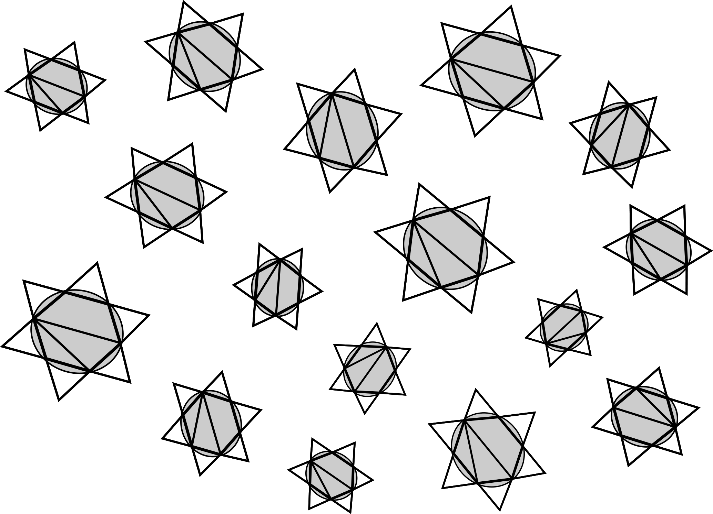
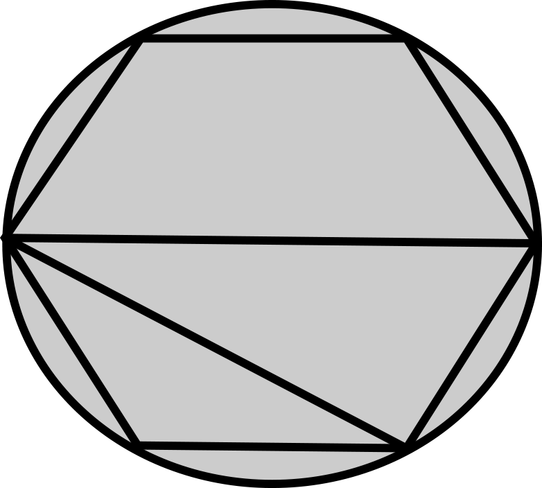
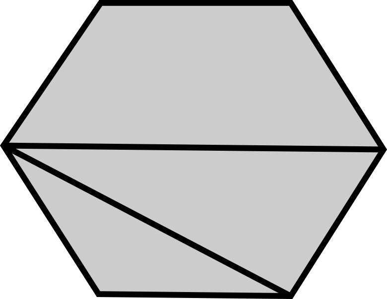
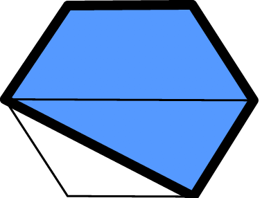
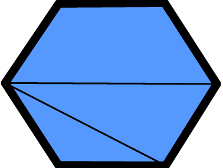
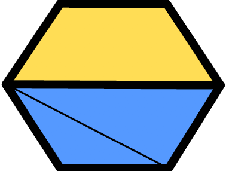
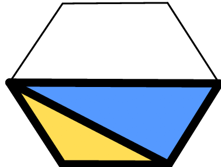

Problem
The figures in the diagram below are similar. They each contain a circle and some straight lines.Suppose new figures are created by removing all straight lines which lie outside the circle from 75\(\%\) of the figures.
Draw a diagram showing what one of the new figures would look like.
How many new figures are created?
How many of the original figures remain unchanged?
Now suppose that the circle is removed from \(\frac{2}{3}\) of the new figures created in part a).
How many of the new figures from part a) will still contain a circle?
Draw a diagram of one of the new figures with the circle removed. Then name all the geometric shapes formed by the straight lines in this figure.

Solution
A typical new figure would look like this:

There are \(16\) figures in total. Since \(75\%=\frac{75}{100}=\frac{3}{4}=\frac{12}{16}\), that tells us \(12\) new figures were created.
There are \(16\) figures in total and \(12\) of them were changed. So \(16-12=4\) of the original figures remain unchanged.
There were \(12\) new figures created in part a). Since \(\frac{2}{3}=\frac{8}{12}\), that tells us 8 of the figures have no circle, so \(12-8=4\) will still have a circle.
A typical new figure would look like this:

It contains a pentagon, a hexagon, two trapezoids, and two triangles, as shown below.
